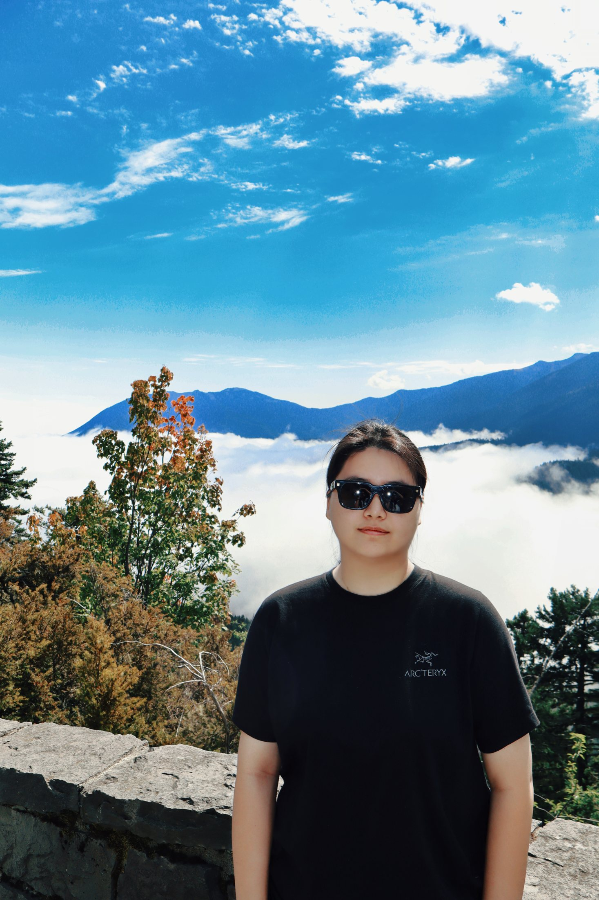
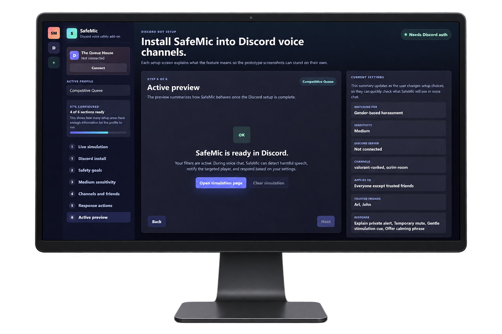
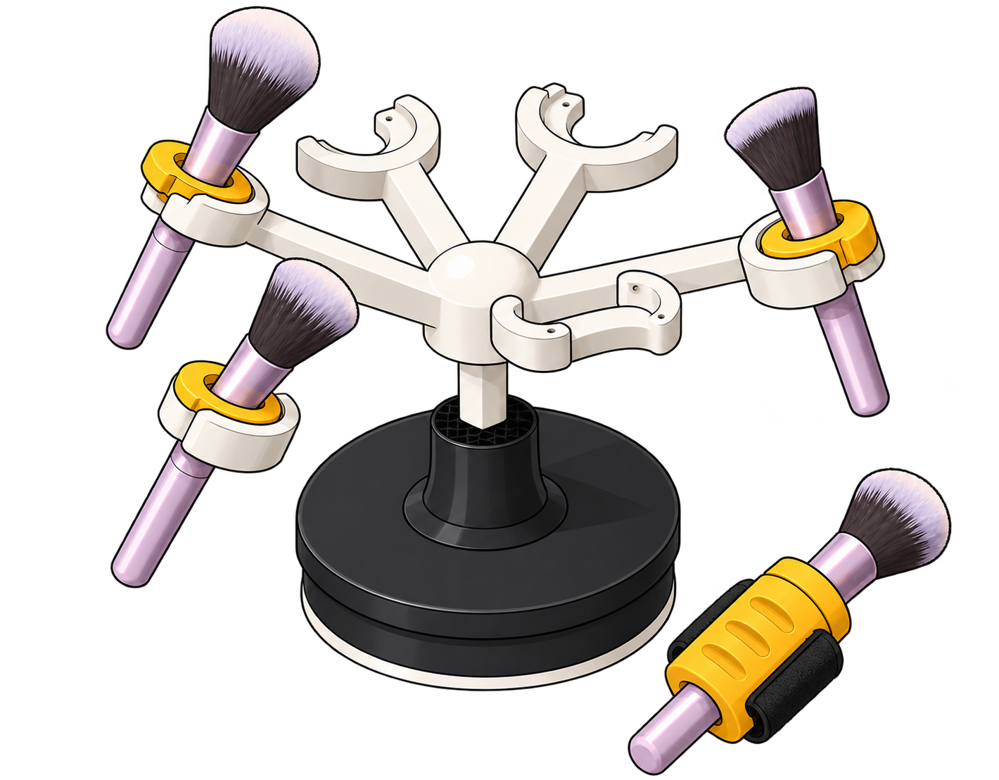

Trippo
A travel-planning web app that turns destinations, schedules, budgets, and confirmations into one calm flow.
View case study
I’m GraceDesigning across UX, accessibility, and interaction
with a background in HCDE.
Projects (2024–26)
A travel-planning web app that turns destinations, schedules, budgets, and confirmations into one calm flow.
View case study
A focused voice-moderation concept that helps online players understand harmful behavior and choose what happens next.
View case study
A physical product system that makes holding, retrieving, and using makeup brushes easier for people with limited grip strength.
View case study